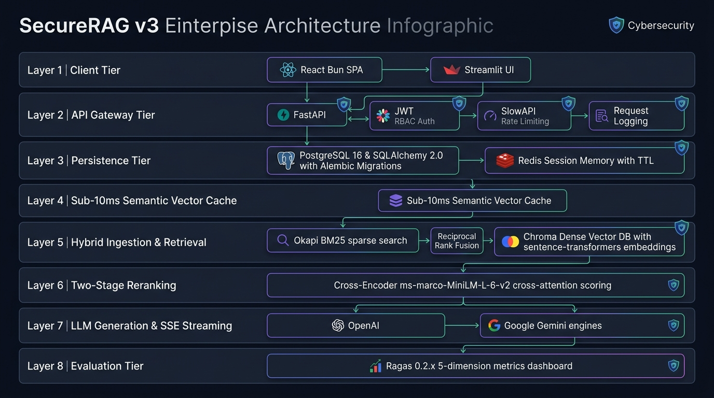

✨ Rendered High-Resolution System Infographic
Visual 6-layer architecture overview showcasing Client, API Gateway, Hybrid Retrieval, Reranker, Cache, LLM, and Evaluation tiers.

🌐 Full Interactive System Topology
Detailed multi-tier component connections and data flows.
flowchart TD
%% ── 1. Client Tier ──
subgraph ClientTier ["1. Client Tier"]
ReactApp["React 19 + TypeScript SPA
(Bun + Vite)"]
StreamlitApp["Streamlit Python UI
(Admin & Diagnostic Console)"]
end
%% ── 2. API Gateway Tier ──
subgraph APITier ["2. API Gateway & Security Tier (FastAPI)"]
CORS["CORS Middleware"]
Logging["RequestLoggingMiddleware
(X-Request-ID Tracking)"]
RateLimiter["SlowAPI Rate Limiter
(120/min global | 20/min chat)"]
AuthRouter["/auth Router
(JWT HS256, Bcrypt 72B)"]
DocRouter["/documents Router
(Upload, Delete, RBAC Role Filter)"]
ChatRouter["/chat Router
(Sync Query & SSE Token Stream)"]
end
%% ── 3. Semantic Cache Tier ──
subgraph CacheTier ["3. Sub-10ms Semantic Vector Cache"]
SemCache[("Semantic Vector Cache
(Cosine Sim >= 0.96 & JSON Store)")]
end
%% ── 4. Hybrid Ingestion & Retrieval Engine ──
subgraph RAGCore ["4. Hybrid Ingestion & Retrieval Engine"]
Ingestion["DocumentIngestionService
(PyPDF, Heading Splitter)"]
DenseStore[("Chroma Vector Store
(384-d Cosine Metric)")]
SparseStore[("Okapi BM25 Index
(Robertson-Spärck Jones IDF)")]
RRF["Reciprocal Rank Fusion
(k=60 | Dense: 0.6, Sparse: 0.4)"]
Recontext["Dialogue Recontextualizer
(Multi-turn Memory Synthesis)"]
end
%% ── 5. Two-Stage Reranker Tier ──
subgraph RerankTier ["5. Two-Stage Cross-Encoder Reranker"]
CrossEncoder["CrossEncoder Model
(cross-encoder/ms-marco-MiniLM-L-6-v2)"]
end
%% ── 6. LLM Generation Tier ──
subgraph LLMTier ["6. LLM Generation & SSE Streaming"]
OpenAIProvider["OpenAI Engine
(gpt-4o-mini / gpt-4o)"]
GeminiProvider["Google Gemini Engine
(gemini-1.5-flash)"]
SSEGen["SSE Event Streamer
(Sources, Tokens, Done)"]
end
%% ── 7. Evaluation Tier ──
subgraph EvalTier ["7. Evaluation & Quality Assurance"]
Ragas["Ragas 0.2.x Pipeline
(Faithfulness, Relevancy, Precision, Recall)"]
GoldenDS[("Golden QA Dataset
(20 Curated Ground Truths)")]
end
%% ── Inter-layer Connections ──
ReactApp --> CORS
StreamlitApp --> CORS
CORS --> Logging
Logging --> RateLimiter
RateLimiter --> AuthRouter
RateLimiter --> DocRouter
RateLimiter --> ChatRouter
DocRouter --> Ingestion
Ingestion --> DenseStore
Ingestion --> SparseStore
ChatRouter --> SemCache
SemCache -.->|Cache Miss| Recontext
Recontext --> DenseStore
Recontext --> SparseStore
DenseStore --> RRF
SparseStore --> RRF
RRF --> CrossEncoder
CrossEncoder --> OpenAIProvider
CrossEncoder --> GeminiProvider
OpenAIProvider --> SSEGen
GeminiProvider --> SSEGen
SSEGen --> ReactApp
SSEGen --> StreamlitApp
SSEGen -.->|Store Query & Answer| SemCache
GoldenDS --> Ragas
Ragas --> APITier
⚡ Real-time SSE Chat & Hybrid Retrieval Lifecycle
Detailed step-by-step query lifecycle including semantic cache check, cross-attention scoring, and token streaming.
sequenceDiagram
autonumber
actor Client as React Client (Bun) / Streamlit
participant ChatAPI as POST /chat/stream
participant Cache as Semantic Vector Cache
participant Memory as SessionStore
participant Retriever as Hybrid Retriever (Chroma + BM25)
participant Reranker as Cross-Encoder Reranker
participant LLM as OpenAI / Gemini
Client->>ChatAPI: POST /chat/stream (question, session_id)
ChatAPI->>Cache: Lookup query embedding (cosine sim >= 0.96)
alt Semantic Cache Hit (< 10ms)
Cache-->>ChatAPI: Return cached answer & sources
ChatAPI-->>Client: event: sources (Citation metadata)
ChatAPI-->>Client: event: token (Full cached answer)
ChatAPI-->>Client: event: done (cached: true)
else Semantic Cache Miss
ChatAPI->>Memory: Retrieve conversation turns
Memory-->>ChatAPI: Prior dialogue context
ChatAPI->>Retriever: Retrieve candidates (Dense + BM25 RRF, k=12)
Retriever-->>ChatAPI: 12 Candidate Chunks
ChatAPI->>Reranker: Score query-passage cross-attention
Reranker-->>ChatAPI: Top-4 Reranked Chunks
ChatAPI-->>Client: event: sources (Grounded citation metadata)
ChatAPI->>LLM: Prompt LLM with reranked context
loop Token Streaming
LLM-->>ChatAPI: Next generated token
ChatAPI-->>Client: event: token (text snippet)
end
ChatAPI->>Cache: Store (query, embedding, answer, sources)
ChatAPI->>Memory: Save turn to SessionStore
ChatAPI-->>Client: event: done (cached: false)
end
📄 Document Ingestion & Vector Indexing Flow
Page-aware extraction, recursive splitting, dense embedding, and sparse BM25 indexing.
sequenceDiagram
autonumber
actor Client as User / Admin
participant API as POST /documents/upload
participant Ingest as DocumentIngestionService
participant Splitter as RecursiveCharacterTextSplitter
participant Embed as SentenceTransformers (all-MiniLM-L6-v2)
participant Chroma as Chroma Vector DB (Dense)
participant BM25 as Okapi BM25 Index (Sparse)
participant Registry as DocumentRegistry
Client->>API: Upload Document (PDF / TXT / MD)
API->>API: Validate file type & size
API->>Ingest: Ingest file with owner & role metadata
Ingest->>Splitter: Split text (chunk_size=900, overlap=150)
Splitter-->>Ingest: Text chunks with page numbers
Ingest->>Embed: Generate 384-d normalized embeddings
Embed-->>Ingest: Vector representations
Ingest->>Chroma: Store chunks, vectors & RBAC metadata
Ingest->>BM25: Tokenize & update sparse index stats
Ingest->>Registry: Register document record
Ingest-->>API: IngestionResult (chunks count, doc_id)
API-->>Client: 201 Created (UploadResponse)
🛡️ Role-Based Access Control (RBAC) Security Architecture
Multi-tenant role boundaries and ChromaDB query-level document isolation.
flowchart LR
subgraph Roles ["User Role Hierarchy"]
AdminRole["👑 Admin Role
(Full Access to all chunks & docs)"]
MgrRole["👔 Manager Role
(Access to Team & Internal docs)"]
UserRole["👤 User Role
(Access only to Public & Owned docs)"]
end
subgraph VectorFilter ["ChromaDB RBAC Query Filter"]
FilterLogic["Metadata Filter:
$or: [
{ allowed_roles: { $in: [user_role] } },
{ owner_id: user_id }
]"]
end
subgraph ChunksCollection ["Secured Chroma DB Chunks"]
DocPublic["Chunk 1: Public Policy
roles: [user, manager, admin]"]
DocInternal["Chunk 2: Financial Roadmap
roles: [manager, admin]"]
DocConfidential["Chunk 3: Exec Strategy
roles: [admin]"]
end
AdminRole -->|Can Retrieve All| ChunksCollection
MgrRole -->|Filtered Retrieval| DocPublic
MgrRole -->|Filtered Retrieval| DocInternal
UserRole -->|Filtered Retrieval| DocPublic
FilterLogic -.->|Enforced in| ChunksCollection